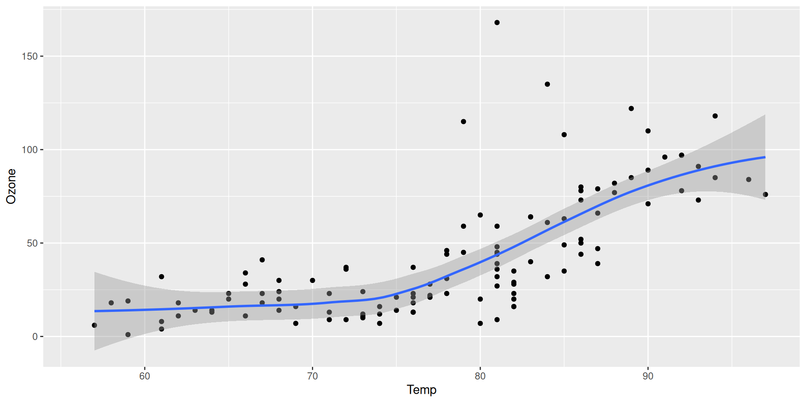
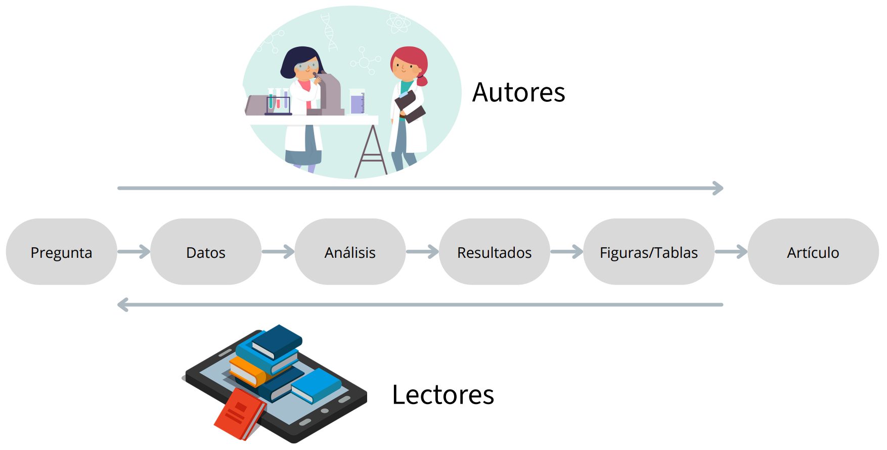
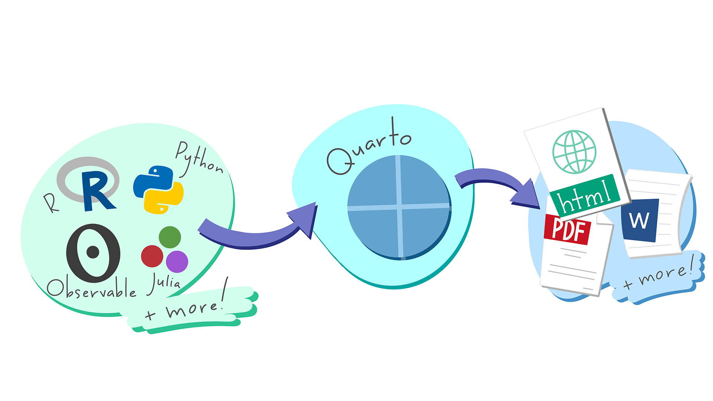
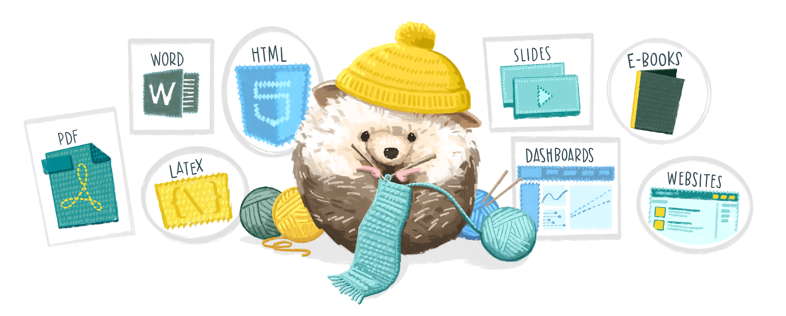
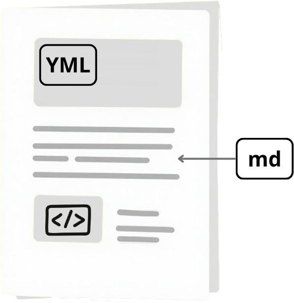

Documentos reproducibles en Quarto
Flujo de trabajo científico

A veces el flujo de información es insuficiente
- Muchos pasos de la investigación no se documentan
- La documentación de los datos a veces es insuficiente
- No se pueden reutilizar
- No se pueden reproducir
Problemas
- Dejar listos los resultados de forma que sean reproducibles requiere un esfuerzo considerable
- Los lectores deben descargar los datos/resultados y entender cómo se realizó el análisis
- Puede haber diferencias entre los recursos/paquetes/equipos que tienen los lectores y los autores
- Existen pocas herramientas que ayuden a autores/lectores -> está creciendo
Opciones
- Rmarkdown (R + texto)
- Jupyter Notebooks (python + texto)
- Sweave (Latex + texto)
Quarto

Diferencias entre Rmarkdown y Quarto
En escencia, para los usuarios de R, Quarto funciona de una manera muy similar que R markdown.
Quarto es independiente de R
Quarto integra muchas de las herramientas que se desarrollaron en Rmarkdown
Rmarkdown siempre tendrá soporte pero nuevas funcionalidades quizá estén concentradas en Quarto

Tipos de documentos
Estructura de un documento de Quarto
- Encabezado (YML)
- Texto (utilizando markdown)
- Código

YML
Ejercicio
md
Sintaxis en el texto
| Markdown Syntax | Output |
|---|---|
| italics, bold, bold italics | |
| superscript2 / subscript2 | |
verbatim code |
Encabezados
| Markdown | Resultado |
|---|---|
Heading 1 |
|
Heading 2 |
|
Heading 3 |
|
Heading 4 |
|
Heading 5 |
|
Heading 6 |
Vínculos e imágenes
| Markdown Syntax | Output |
|---|---|
| https://quarto.org | |
| Quarto | |
| Documentos | |
| Secciones en un documento | |
|
Listas
| Markdown Syntax | Output |
|---|---|
|
|
|
|
|
|
|
|
continues after
|
|
|
|
|
Ecuaciones
| Markdown Syntax | Output |
|---|---|
| inline math: \(E=mc^{2}\) | |
display math: \[E = mc^{2}\] |
Ejercicio
Código
Partes del código
- Para añadir un chunk puedes usar el atajo
ctrl + alt + i - El chunk se define por ```{r}, r es el lenguaje de programación
- Las características del chunk son definidas por
#|